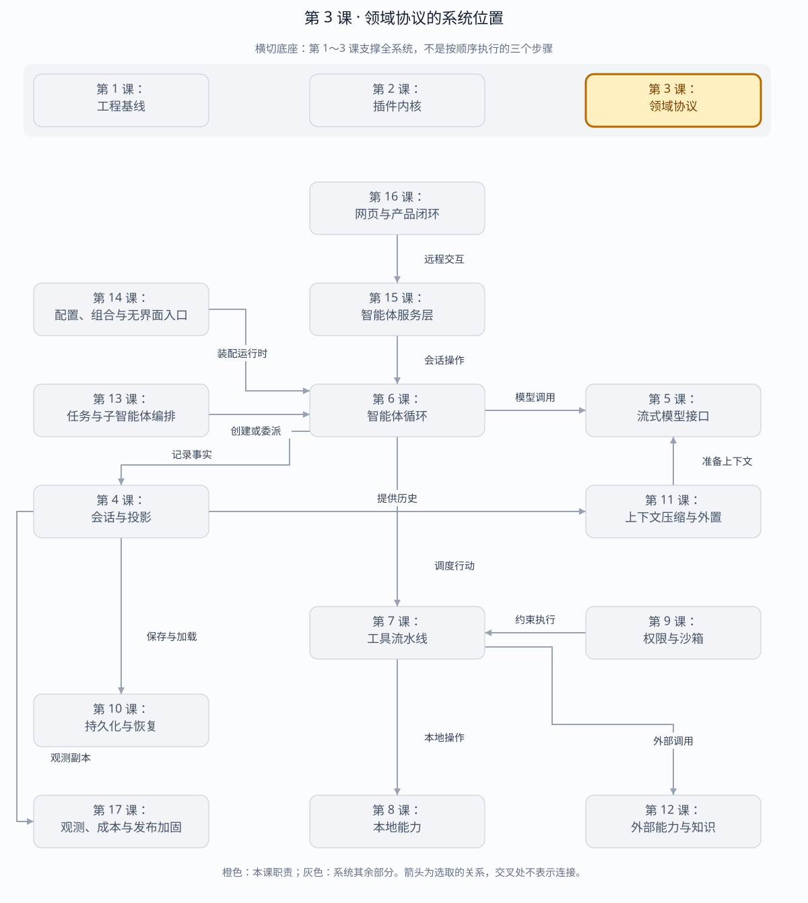

第 3 课：固定 Agent 领域协议
Agent Loop、持久化、Web Server 和 UI 必须讲同一种语言。本课先固定跨边界数据，再开始写行为。
章节概览（可选）：三框架职责摘要
本章对比：DeepSeek Harness / DeepAgents / OpenHands
口径：DeepSeek 依据本地原仓库（99f6f02fecdb），不是 harness-lab；deepagent 按 LangChain DeepAgents 理解；OpenHands 对比当前 Software Agent SDK，不混用旧 V0。在线资料核对于 2026-08-28，描述文档能力，不代表已在本实验室安装或测试。没有依据的同名能力不强行等同。
三者的关键区别：共同点是避免把所有东西塞进聊天字符串；区别是 DeepSeek 的日志表层、DeepAgents 的图状态、OpenHands 的类型化事件分别承担核心约束。（基于上述依据的归纳）
本章在全系统中的位置
横跨循环、状态、工具与远程接口的共同语言层。
下面是本课程的概念地图，不是某框架的逐包调用图，也不表示实验室已默认装配全部能力。三套框架的实际对应关系见上方横向对比表。
全系统定位 · 橙色高亮第 3 课
打开大图 · Mermaid 图源
| 上游与输入 | 用户输入、模型分片、工具请求及生命周期变化。 |
|---|
| 下游与输出 | 有明确身份、类型和语义的消息或事件，供第 4 课状态层及第 15 课接口层消费。 |
|---|
| 不归本章负责 | 协议描述发生了什么，不负责执行副作用；运行时对象也不应直接跨网络。 |
|---|
| 放进具体场景 | 工具调用与结果需要关联身份，恢复时才能判断哪个调用已完成，UI 才能更新正确卡片。 |
|---|
接着看下方「可视化图解」：局部模块图解释职责，时序图解释一次调用，分支图解释异常与边界。
本课导览
| 包含内容 | 消息、内容块、模型请求、工具调用、会话事件及无损 JSON 边界。 |
|---|
| 涉及模块 | Message、ContentBlock、StreamChunk、Tool、SessionEvent。 |
|---|
| 白话解释 | 先统一词汇和数据格式，让智能体、服务端、存储和网页端不会各说各话。 |
|---|
| 解决的问题 | 避免跨模块传输时字段丢失、含义漂移或类型不一致，并为持久化和重放建立稳定契约。 |
|---|
点击下面的概念名称，可直达该概念的三框架实现、区别与依据。原有能力清单、示例和验收描述面向 harness-lab 教学实现；不要将其直接当作上游框架能力声明。
完整能力清单
| 协议族 | 完整变体 | 保证 |
|---|
| 消息与来源 | 用户、模型、工具和系统消息；稳定消息标识与来源元数据。 | 创建后与调用方对象隔离。 |
| 内容块 | 文本、推理、工具调用、工具结果和图片引用。 | 使用标签联合穷尽处理。 |
| 流式协议 | 内容开始、增量、内容结束、用量和终止帧；成功与失败终止原因。 | 提供方差异不穿透运行时。 |
| 工具协议 | 名称、说明、参数模式、并行提示、效果声明和结果投影。 | 原始 JSON 参数保留到校验边界。 |
| 会话协议 | 请求头、消息、轮次、步骤、工具、权限、压缩与反馈事件。 | 事件类型与数据一一对应。 |
| JSON 边界 | 有限数字、普通对象、数组、循环引用检查、快照和递归冻结。 | 拒绝静默丢失或改变含义的数据。 |
主概念深挖：稳定领域协议
领域协议位于所有模块之间，是模型适配器、Agent Loop、存储、服务端和客户端共同依赖的数据语言。
模型 / 用户 / 工具（上游产生者）
│ Message、Chunk、Event
▼
领域协议 + 无损 JSON 边界
┌──────┼────────┬────────┐
▼ ▼ ▼ ▼
Agent Loop Session Server Web Client（下游消费者）
| 背景与目的 | 跨边界对象如果各自演化，会出现字段丢失、同名异义和无法重放；稳定协议先固定事实形状，再允许行为独立演进。 |
|---|
| 输入与输出 | 输入是用户内容、模型增量、工具定义和运行决策；输出是可判别、可序列化、可持久化的消息、流块和会话事件。 |
|---|
| 适用场景 | 进程内模块调用、HTTP/SSE 传输、JSONL 存储、浏览器投影、版本兼容。 |
|---|
| 底层组件 | TypeScript 标签联合、稳定标识、事件映射泛型、JSON 值守卫、快照克隆和深冻结。 |
|---|
| 核心逻辑 | 先在边界检查值能否被 JSON 无损表达，再克隆冻结；消费者按 type 或 kind 穷尽分派，新增变体会触发编译检查。 |
|---|
| 权衡 | 严格协议限制任意对象和隐式字段，但换来传输、存储、重放和多语言客户端的一致语义。 |
|---|
| 方案对比 | 直接共享类实例保留行为却无法跨进程；松散字典灵活但错误延迟到运行时；标签联合在扩展成本和可靠性之间更均衡。 |
|---|
场景穷举
边界数据进入协议
├─ 合法标签变体 → 快照、冻结、传输
├─ 未知标签 → 消费者明确拒绝
├─ NaN / Infinity / undefined → JSON 边界拒绝
├─ 循环引用 → 路径化错误，不进入日志
└─ 新增变体 → 编译期 assertNever 暴露遗漏消费者
| 场景 | 例子 | 协议行为 |
|---|
| 正常 | 文本、推理、工具调用、结果和图片在一次消息中混合。 | 通过标签保持顺序和各自字段。 |
| 边界 | 空文本、空内容数组、极深 JSON 或大整数。 | 由领域不变量和 JSON 表达能力分别判断。 |
| 失败 | 工具参数不是合法 JSON，或值含函数、BigInt。 | 保留原始参数到工具边界；不可表达事件不写入 Session。 |
| 演进 | 新增音频内容块或新终止原因。 | 版本化协议并让穷尽分派暴露旧消费者。 |
| 误用 | 把类实例、异常对象直接塞进事件。 | 无损 JSON 守卫拒绝隐式丢字段或原型语义。 |
多方案对比
| 方案 | 演进能力 | 跨边界能力 | 风险 |
|---|
| 共享类实例 | 方法封装强。 | 弱，跨进程需另写映射。 | 原型和对象身份无法重放。 |
| 松散字典 | 随意加字段。 | 强。 | 错误晚发现、同名异义。 |
| 标签联合+无损 JSON | 新增变体显式。 | 强，可传输可存储。 | 协议变更需要同步消费者。 |
| Protobuf/JSON Schema | 跨语言和生成工具更强。 | 强。 | 构建链更重，教学源码不如 TypeScript 直观。 |
关键设计反问
- 为什么工具参数保留原始 JSON 字符串？
- 模型产生的语法错误本身是需要审计和重放的事实；若领域层提前解析，坏输入会被丢失或改写。
- 深冻结是不是多余？
- TypeScript 的 readonly 只约束编译期；调用方仍可能持有同一对象并在事件写入后修改它。
- 所有字段都应该进入通用元数据吗？
- 不应该。高频且影响行为的字段应进入正式协议，只有真正开放、可忽略的数据才适合元数据，否则类型系统无法保护消费者。
协议分层
ContentBlock
├── text / reasoning
├── tool-call
└── tool-result
↓
Message + stable id + source
↓
StreamChunk / TokenUsage / FinishReason
↓
SessionEvent<type, data>
↓
append-only Session
| 边界 | 必须保留 | 不能进入 |
|---|
| 模型 | Message、ToolSchema、StreamChunk | 工具执行函数、Service 实例 |
| 持久化 | SessionEvent、稳定 id、原始 tool arguments | AbortSignal、Error 实例、闭包 |
| UI/Server | 事件标签、seq、time、JSON data | 运行时对象引用 |
为什么工具参数先保留字符串？模型产生的是原始 JSON 字符串。只有 Tool Registry 知道目标 schema，解析、校验和规范化必须留到工具执行阶段；事件账本保留原文才能忠实复盘模型行为。
消息与来源：三框架分别怎么做？
同一个问题：用户、模型与工具的消息身份如何表达？
这个概念的区别：比较来源时要区分谁生成、消息扮演什么角色、属于哪个调用。
内容块：三框架分别怎么做？
同一个问题：文本、推理、图片与工具调用如何进入消息？
这个概念的区别：统一为聊天文本会丢失结构；但三者内容块格式本身也不能直接互换。
流式协议：三框架分别怎么做？
同一个问题：半条模型输出如何与完整消息区分？
这个概念的区别：传输增量、消息组装与领域事件是三层协议，不能共享一个“message”类型糊过去。
工具协议：三框架分别怎么做？
同一个问题：参数和结果分别在哪一层校验？
这个概念的区别：DeepSeek 的统一调用流水线、LangChain 的工具 schema、OpenHands 的 Action/Observation 划分不是同一个接口。
会话协议：三框架分别怎么做？
同一个问题：历史记录和执行状态是否只有一个事实来源？
这个概念的区别：三种协议分别以日志、图状态、状态加事件为中心，重放语义必须分别定义。
JSON 边界：三框架分别怎么做？
同一个问题：跨存储边界能否携带运行时对象？
这个概念的区别：“可序列化”的允许集合不同；协议升级前要验证 round-trip，不是只验证类型检查。
运行与调试
cd harness-lab
bun run typecheck
bun test
bun run demo:protocol
# 在 assertJsonValue、Session.append 或测试 switch 中设断点
VS Code F5 → 02 · 领域协议
协议演示会打印连续的：
turn/start seq 0
user/message seq 1
step/start seq 2
request/header seq 3
assistant/chunk seq 4 text-delta
assistant/chunk seq 5 usage
本阶段的调试闸门
- 编译期：
SessionEventMap 绑定 event type 与 data；新增变体会迫使消费者处理。
- 运行期：
assertJsonValue() 拒绝 undefined、NaN、BigInt、Date、Symbol 和循环引用。
- 身份：Message 在创建时生成 UUID，克隆并深度冻结。
- 顺序：Session 独占 seq 分配；恢复日志有缺口立即拒绝。
- 往返：事件必须满足
JSON.parse(JSON.stringify(x)) === x。
练习
- 给
StreamChunk 新增 image-delta，先运行 typecheck，观察穷尽 switch 报错。
- 在一个 Session Event 中放入
new Date()，在 assertJsonValue() 查看失败路径。
- 手工把恢复数组的第二条事件 seq 改为 9，确认 Session 拒绝恢复。
验收结果
TypeScript strict check: passed
tests: 10
pass: 10
fail: 0
源码与一手参考
下一课会实现真正的 append-only Session 账本及 surface/history 投影，证明“日志是唯一真源”。遇到任何协议或断点问题，直接继续问我。
返回完整路线 →